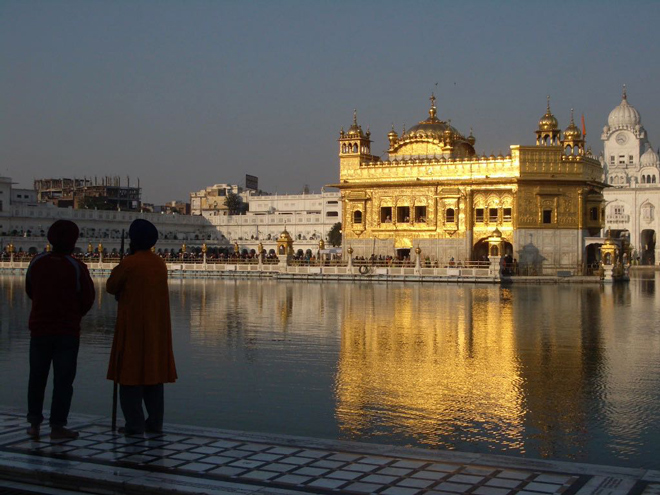
.
Taking a nine-hour 'express' rail journey on the Shatabdi Express, we arrived into Amritsar almost on the border with Pakistan. Its most famous site is the fabled Golden Temple, spiritual centre of the Sikh faith.
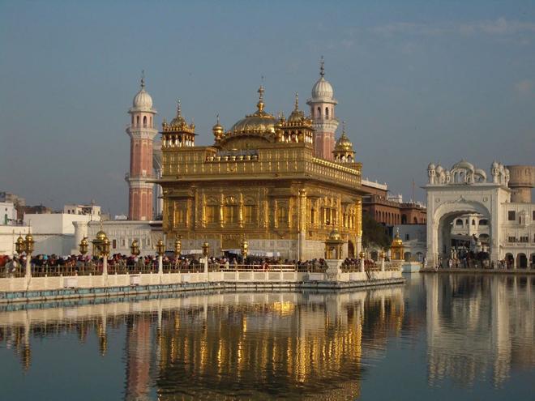
Built by Guru Arjan Dev in the late sixteenth century, the richly gilded Harmandir rises from the middle of a rectangular articial lake, connected to the white marble complex that surrounds it by a small causeway. Every devout member of the Sikh faith tries to make at least one pilgrimage here in their lifetime for darshan of the original Sikh holy book, the Adi Granth, and to bathe in the purifying waters of the temple tank.
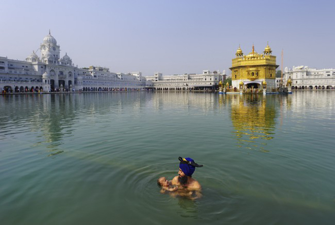
The large dome on its gilded roof, decked with 100kg of gold leaf, is in the form of an inverted lotus, symbolising the Sikhs' concern for temporal as well as spiritual matters.
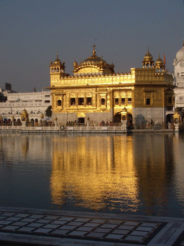
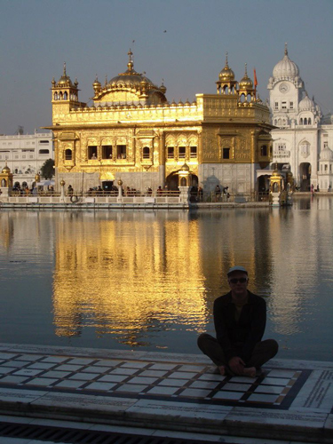
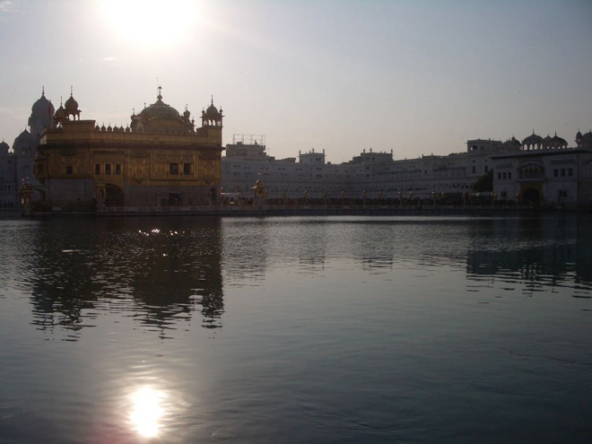
Widely regarded as an unmitigated disaster, 'Blue Star' led directly to the assassination of Indira Ghandi by her Sikh bodyguards just four months later, and provoked the worst riots in the city since Partition.
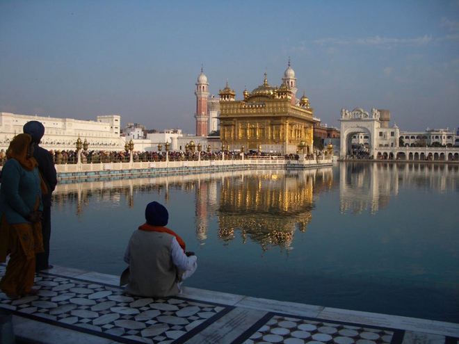
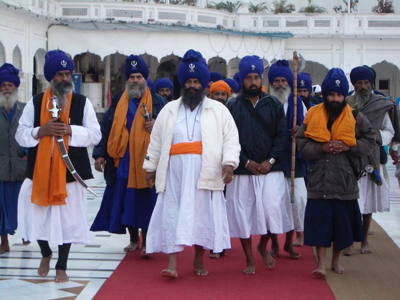
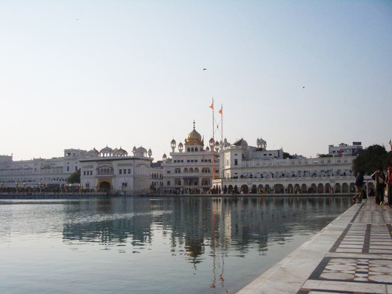
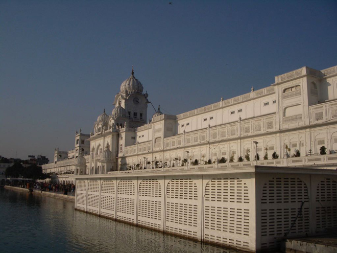
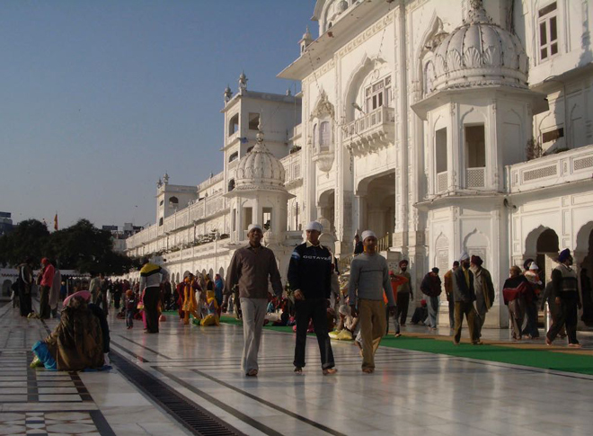
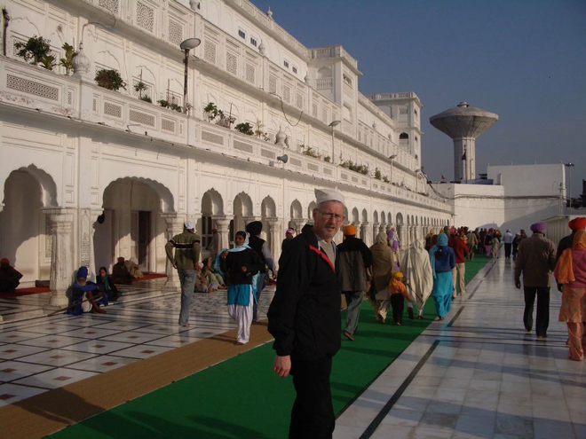
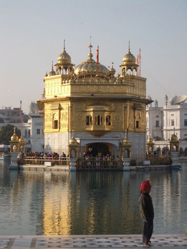
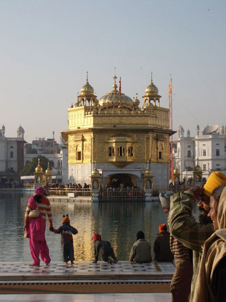
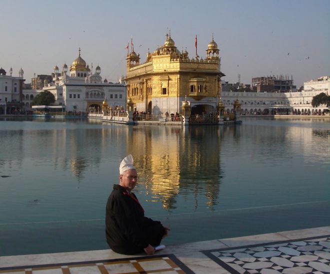